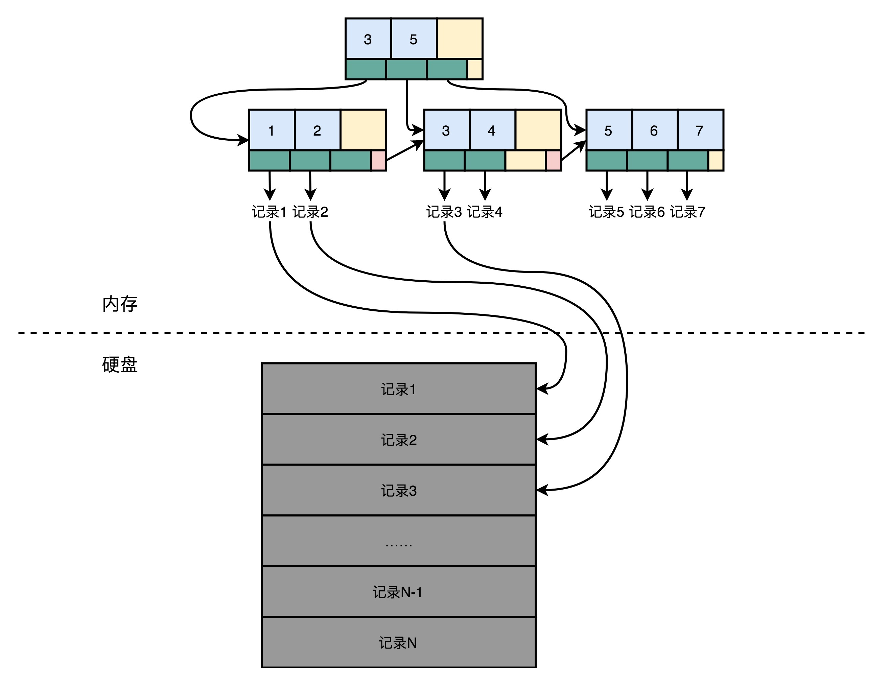
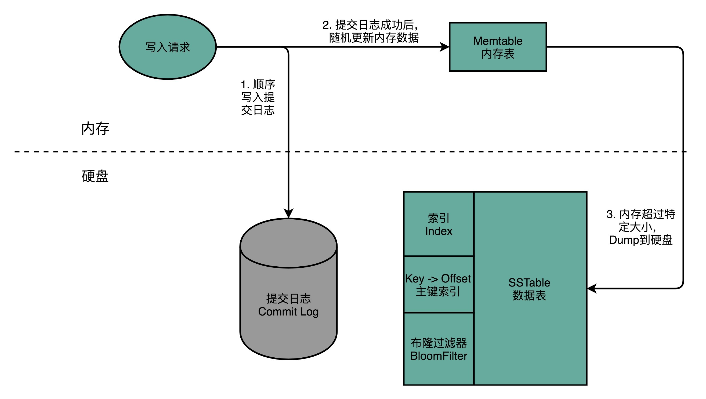
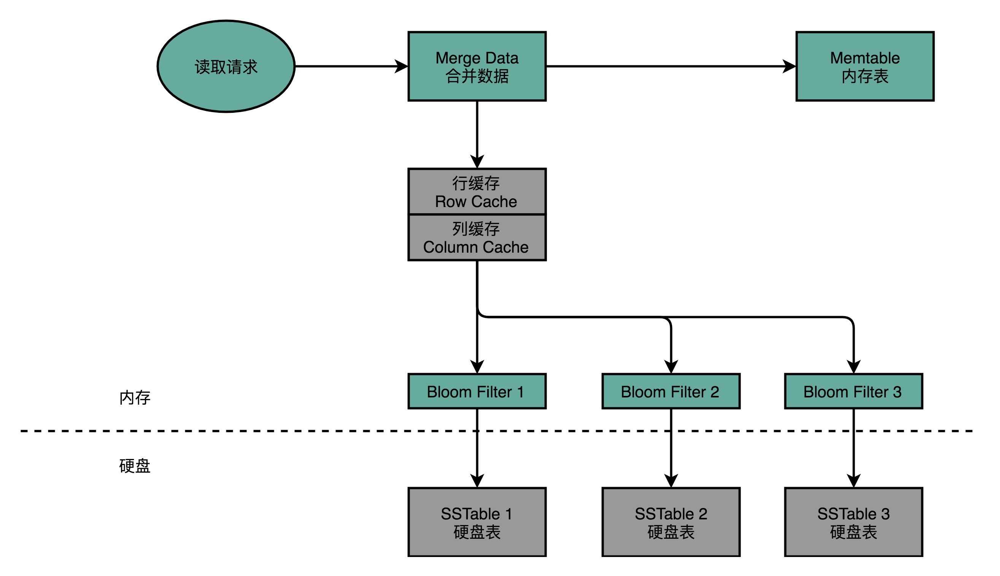
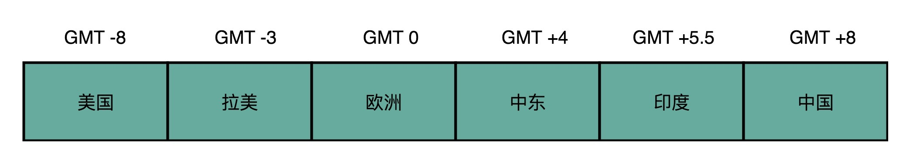

- 00 开篇词 为什么你需要学习计算机组成原理？.md.html
- 01 冯·诺依曼体系结构：计算机组成的金字塔.md.html
- 02 给你一张知识地图，计算机组成原理应该这么学.md.html
- 03 通过你的CPU主频，我们来谈谈“性能”究竟是什么？.md.html
- 04 穿越功耗墙，我们该从哪些方面提升“性能”？.md.html
- 05 计算机指令：让我们试试用纸带编程.md.html
- 06 指令跳转：原来if...else就是goto.md.html
- 07 函数调用：为什么会发生stack overflow？.md.html
- 08 ELF和静态链接：为什么程序无法同时在Linux和Windows下运行？.md.html
- 09 程序装载：“640K内存”真的不够用么？.md.html
- 10 动态链接：程序内部的“共享单车”.md.html
- 11 二进制编码：“手持两把锟斤拷，口中疾呼烫烫烫”？.md.html
- 12 理解电路：从电报机到门电路，我们如何做到“千里传信”？.md.html
- 13 加法器：如何像搭乐高一样搭电路（上）？.md.html
- 14 乘法器：如何像搭乐高一样搭电路（下）？.md.html
- 15 浮点数和定点数（上）：怎么用有限的Bit表示尽可能多的信息？.md.html
- 16 浮点数和定点数（下）：深入理解浮点数到底有什么用？.md.html
- 17 建立数据通路（上）：指令加运算=CPU.md.html
- 18 建立数据通路（中）：指令加运算=CPU.md.html
- 19 建立数据通路（下）：指令加运算=CPU.md.html
- 20 面向流水线的指令设计（上）：一心多用的现代CPU.md.html
- 21 面向流水线的指令设计（下）：奔腾4是怎么失败的？.md.html
- 22 冒险和预测（一）：hazard是“危”也是“机”.md.html
- 23 冒险和预测（二）：流水线里的接力赛.md.html
- 24 冒险和预测（三）：CPU里的“线程池”.md.html
- 25 冒险和预测（四）：今天下雨了，明天还会下雨么？.md.html
- 26 Superscalar和VLIW：如何让CPU的吞吐率超过1？.md.html
- 27 SIMD：如何加速矩阵乘法？.md.html
- 28 异常和中断：程序出错了怎么办？.md.html
- 29 CISC和RISC：为什么手机芯片都是ARM？.md.html
- 30 GPU（上）：为什么玩游戏需要使用GPU？.md.html
- 31 GPU（下）：为什么深度学习需要使用GPU？.md.html
- 32 FPGA、ASIC和TPU（上）：计算机体系结构的黄金时代.md.html
- 33 解读TPU：设计和拆解一块ASIC芯片.md.html
- 34 理解虚拟机：你在云上拿到的计算机是什么样的？.md.html
- 35 存储器层次结构全景：数据存储的大金字塔长什么样？.md.html
- 36 局部性原理：数据库性能跟不上，加个缓存就好了？.md.html
- 37 理解CPU Cache（上）：“4毫秒”究竟值多少钱？.md.html
- 38 高速缓存（下）：你确定你的数据更新了么？.md.html
- 39 MESI协议：如何让多核CPU的高速缓存保持一致？.md.html
- 40 理解内存（上）：虚拟内存和内存保护是什么？.md.html
- 41 理解内存（下）：解析TLB和内存保护.md.html
- 42 总线：计算机内部的高速公路.md.html
- 43 输入输出设备：我们并不是只能用灯泡显示“0”和“1”.md.html
- 44 理解IO_WAIT：IO性能到底是怎么回事儿？.md.html
- 45 机械硬盘：Google早期用过的“黑科技”.md.html
- 46 SSD硬盘（上）：如何完成性能优化的KPI？.md.html
- 47 SSD硬盘（下）：如何完成性能优化的KPI？.md.html
- 48 DMA：为什么Kafka这么快？.md.html
- 49 数据完整性（上）：硬件坏了怎么办？.md.html
- 50 数据完整性（下）：如何还原犯罪现场？.md.html
- 51 分布式计算：如果所有人的大脑都联网会怎样？.md.html
- 52 设计大型DMP系统（上）：MongoDB并不是什么灵丹妙药.md.html
- 53 设计大型DMP系统（下）：SSD拯救了所有的DBA.md.html
- 54 理解Disruptor（上）：带你体会CPU高速缓存的风驰电掣.md.html
- 55 理解Disruptor（下）：不需要换挡和踩刹车的CPU，有多快？.md.html
- 结束语 知也无涯，愿你也享受发现的乐趣.md.html
53 设计大型DMP系统（下）：SSD拯救了所有的DBA
上一讲里，根据 DMP 系统的各个应用场景，我们从抽象的原理层面，选择了 AeroSpike 作为 KV 数据库，Kafka 作为数据管道，Hadoop/Hive 来作为数据仓库。
不过呢，肯定有不信邪的工程师会问，为什么 MongoDB，甚至是 MySQL 这样的文档数据库或者传统的关系型数据库不适用呢？为什么不能通过优化 SQL、添加缓存这样的调优手段，解决这个问题呢？
今天 DMP 的下半场，我们就从数据库实现的原理，一起来看一看，这背后的原因。如果你能弄明白今天的这些更深入、更细节的原理，对于什么场景使用什么数据库，就会更加胸有成竹，而不是只有跑了大量的性能测试才知道。下次做数据库选型的时候，你就可以“以理服人”了。
关系型数据库：不得不做的随机读写
我们先来想一想，如果现在让你自己写一个最简单的关系型数据库，你的数据要怎么存放在硬盘上？
最简单最直观的想法是，用一个 CSV 文件格式。一个文件就是一个数据表。文件里面的每一行就是这个表里面的一条记录。如果要修改数据库里面的某一条记录，那么我们要先找到这一行，然后直接去修改这一行的数据。读取数据也是一样的。
要找到这样数据，最笨的办法自然是一行一行读，也就是遍历整个 CSV 文件。不过这样的话，相当于随便读取任何一条数据都要扫描全表，太浪费硬盘的吞吐量了。那怎么办呢？我们可以试试给这个 CSV 文件加一个索引。比如，给数据的行号加一个索引。如果你学过数据库原理或者算法和数据结构，那你应该知道，通过 B+ 树多半是可以来建立这样一个索引的。
索引里面没有一整行的数据，只有一个映射关系，这个映射关系可以让行号直接从硬盘的某个位置去读。所以，索引比起数据小很多。我们可以把索引加载到内存里面。即使不在内存里面，要找数据的时候快速遍历一下整个索引，也不需要读太多的数据。
加了索引之后，我们要读取特定的数据，就不用去扫描整个数据表文件了。直接从特定的硬盘位置，就可以读到想要的行。索引不仅可以索引行号，还可以索引某个字段。我们可以创建很多个不同的独立的索引。写 SQL 的时候，where 子句后面的查询条件可以用到这些索引。
不过，这样的话，写入数据的时候就会麻烦一些。我们不仅要在数据表里面写入数据，对于所有的索引也都需要进行更新。这个时候，写入一条数据就要触发好几个随机写入的更新。

在这样一个数据模型下，查询操作很灵活。无论是根据哪个字段查询，只要有索引，我们就可以通过一次随机读，很快地读到对应的数据。但是，这个灵活性也带来了一个很大的问题，那就是无论干点什么，都有大量的随机读写请求。而随机读写请求，如果请求最终是要落到硬盘上，特别是 HDD 硬盘的话，我们就很难做到高并发了。毕竟 HDD 硬盘只有 100 左右的 QPS。
而这个随时添加索引，可以根据任意字段进行查询，这样表现出的灵活性，又是我们的 DMP 系统里面不太需要的。DMP 的 KV 数据库主要的应用场景，是根据主键的随机查询，不需要根据其他字段进行筛选查询。数据管道的需求，则只需要不断追加写入和顺序读取就好了。即使进行数据分析的数据仓库，通常也不是根据字段进行数据筛选，而是全量扫描数据进行分析汇总。
后面的两个场景还好说，大不了我们让程序去扫描全表或者追加写入。但是，在 KV 数据库这个需求上，刚才这个最简单的关系型数据库的设计，就会面临大量的随机写入和随机读取的挑战。
所以，在实际的大型系统中，大家都会使用专门的分布式 KV 数据库，来满足这个需求。那么下面，我们就一起来看一看，Facebook 开源的 Cassandra 的数据存储和读写是怎么做的，这些设计是怎么解决高并发的随机读写问题的。
Cassandra：顺序写和随机读
Cassandra 的数据模型
作为一个分布式的 KV 数据库，Cassandra 的键一般被称为 Row Key。其实就是一个 16 到 36 个字节的字符串。每一个 Row Key 对应的值其实是一个哈希表，里面可以用键值对，再存入很多你需要的数据。
Cassandra 本身不像关系型数据库那样，有严格的 Schema，在数据库创建的一开始就定义好了有哪些列（Column）。但是，它设计了一个叫作列族（Column Family）的概念，我们需要把经常放在一起使用的字段，放在同一个列族里面。比如，DMP 里面的人口属性信息，我们可以把它当成是一个列族。用户的兴趣信息，可以是另外一个列族。这样，既保持了不需要严格的 Schema 这样的灵活性，也保留了可以把常常一起使用的数据存放在一起的空间局部性。
往 Cassandra 的里面读写数据，其实特别简单，就好像是在一个巨大的分布式的哈希表里面写数据。我们指定一个 Row Key，然后插入或者更新这个 Row Key 的数据就好了。
Cassandra 的写操作

Cassandra 只有顺序写入，没有随机写入
Cassandra 解决随机写入数据的解决方案，简单来说，就叫作“不随机写，只顺序写”。对于 Cassandra 数据库的写操作，通常包含两个动作。第一个是往磁盘上写入一条提交日志（Commit Log）。另一个操作，则是直接在内存的数据结构上去更新数据。后面这个往内存的数据结构里面的数据更新，只有在提交日志写成功之后才会进行。每台机器上，都有一个可靠的硬盘可以让我们去写入提交日志。写入提交日志都是顺序写（Sequential Write），而不是随机写（Random Write），这使得我们最大化了写入的吞吐量。
如果你不明白这是为什么，可以回到第 47 讲，看看硬盘的性能评测。无论是 HDD 硬盘还是 SSD 硬盘，顺序写入都比随机写入要快得多。
内存的空间比较有限，一旦内存里面的数据量或者条目超过一定的限额，Cassandra 就会把内存里面的数据结构 dump 到硬盘上。这个 Dump 的操作，也是顺序写而不是随机写，所以性能也不会是一个问题。除了 Dump 的数据结构文件，Cassandra 还会根据 row key 来生成一个索引文件，方便后续基于索引来进行快速查询。
随着硬盘上的 Dump 出来的文件越来越多，Cassandra 会在后台进行文件的对比合并。在很多别的 KV 数据库系统里面，也有类似这种的合并动作，比如 AeroSpike 或者 Google 的 BigTable。这些操作我们一般称之为 Compaction。合并动作同样是顺序读取多个文件，在内存里面合并完成，再 Dump 出来一个新的文件。整个操作过程中，在硬盘层面仍然是顺序读写。
Cassandra 的读操作

Cassandra 的读请求，会通过缓存、BloomFilter 进行两道过滤，尽可能避免数据请求命中硬盘
当我们要从 Cassandra 读数据的时候，会从内存里面找数据，再从硬盘读数据，然后把两部分的数据合并成最终结果。这些硬盘上的文件，在内存里面会有对应的 Cache，只有在 Cache 里面找不到，我们才会去请求硬盘里面的数据。
如果不得不访问硬盘，因为硬盘里面可能 Dump 了很多个不同时间点的内存数据的快照。所以，找数据的时候，我们也是按照时间从新的往旧的里面找。
这也就带来另外一个问题，我们可能要查询很多个 Dump 文件，才能找到我们想要的数据。所以，Cassandra 在这一点上又做了一个优化。那就是，它会为每一个 Dump 的文件里面所有 Row Key 生成一个 BloomFilter，然后把这个 BloomFilter 放在内存里面。这样，如果想要查询的 Row Key 在数据文件里面不存在，那么 99% 以上的情况下，它会被 BloomFilter 过滤掉，而不需要访问硬盘。
这样，只有当数据在内存里面没有，并且在硬盘的某个特定文件上的时候，才会触发一次对于硬盘的读请求。
SSD：DBA 们的大救星
Cassandra 是 Facebook 在 2008 年开源的。那个时候，SSD 硬盘还没有那么普及。可以看到，它的读写设计充分考虑了硬件本身的特性。在写入数据进行持久化上，Cassandra 没有任何的随机写请求，无论是 Commit Log 还是 Dump，全部都是顺序写。
在数据读的请求上，最新写入的数据都会更新到内存。如果要读取这些数据，会优先从内存读到。这相当于是一个使用了 LRU 的缓存机制。只有在万般无奈的情况下，才会有对于硬盘的随机读请求。即使在这样的情况下，Cassandra 也在文件之前加了一层 BloomFilter，把本来因为 Dump 文件带来的需要多次读硬盘的问题，简化成多次内存读和一次硬盘读。
这些设计，使得 Cassandra 即使是在 HDD 硬盘上，也能有不错的访问性能。因为所有的写入都是顺序写或者写入到内存，所以，写入可以做到高并发。HDD 硬盘的吞吐率还是很不错的，每秒可以写入 100MB 以上的数据，如果一条数据只有 1KB，那么 10 万的 WPS（Writes per seconds）也是能够做到的。这足够支撑我们 DMP 期望的写入压力了。
而对于数据的读，就有一些挑战了。如果数据读请求有很强的局部性，那我们的内存就能搞定 DMP 需要的访问量。
但是，问题就出在这个局部性上。DMP 的数据访问分布，其实是缺少局部性的。你仔细想一想 DMP 的应用场景就明白了。DMP 里面的 Row Key 都是用户的唯一标识符。普通用户的上网时长怎么会有局部性呢？每个人上网的时间和访问网页的次数就那么多。上网多的人，一天最多也就 24 小时。大部分用户一天也要上网 2～3 小时。我们没办法说，把这些用户的数据放在内存里面，那些用户不放。

DMP 系统，只有根据国家和时区不同有比较明显的局部性，是局部性不强的系统
那么，我们可不可能有一定的时间局部性呢？如果是 Facebook 那样的全球社交网络，那可能还有一定的时间局部性。毕竟不同国家的人的时区不一样。我们可以说，在印度人民的白天，把印度人民的数据加载到内存里面，美国人民的数据就放在硬盘上。到了印度人民的晚上，再把美国人民的数据换到内存里面来。
如果你的主要业务是在国内，那这个时间局部性就没有了。大家的上网高峰时段，都是在早上上班路上、中午休息的时候以及晚上下班之后的时间，没有什么区分度。
面临这个情况，如果你们的 CEO 或者 CTO 问你，是不是可以通过优化程序来解决这个问题？如果你没有仔细从数据分布和原理的层面思考这个问题，而直接一口答应下来，那你可能之后要头疼了，因为这个问题很有可能是搞不定的。
因为缺少了时间局部性，我们内存的缓存能够起到的作用就很小了，大部分请求最终还是要落到 HDD 硬盘的随机读上。但是，HDD 硬盘的随机读的性能太差了，我们在第 45 讲看过，也就是 100QPS 左右。而如果全都放内存，那就太贵了，成本在 HDD 硬盘 100 倍以上。
不过，幸运的是，从 2010 年开始，SSD 硬盘的大规模商用帮助我们解决了这个问题。它的价格在 HDD 硬盘的 10 倍，但是随机读的访问能力在 HDD 硬盘的百倍以上。也就是说，用上了 SSD 硬盘，我们可以用 1/10 的成本获得和 HDD 硬盘同样的 QPS。同样的价格的 SSD 硬盘，容量则是内存的几十倍，也能够满足我们的需求，用较低的成本存下整个互联网用户信息。
不夸张地说，过去十年的“大数据”“高并发”“千人千面”，有一半的功劳应该归在让 SSD 容量不断上升、价格不断下降的硬盘产业上。
回到我们看到的 Cassandra 的读写设计，你会发现，Cassandra 的写入机制完美匹配了我们在第 46 和 47 讲所说的 SSD 硬盘的优缺点。
在数据写入层面，Cassandra 的数据写入都是 Commit Log 的顺序写入，也就是不断地在硬盘上往后追加内容，而不是去修改现有的文件内容。一旦内存里面的数据超过一定的阈值，Cassandra 又会完整地 Dump 一个新文件到文件系统上。这同样是一个追加写入。
数据的对比和紧凑化（Compaction），同样是读取现有的多个文件，然后写一个新的文件出来。写入操作只追加不修改的特性，正好天然地符合 SSD 硬盘只能按块进行擦除写入的操作。在这样的写入模式下，Cassandra 用到的 SSD 硬盘，不需要频繁地进行后台的 Compaction，能够最大化 SSD 硬盘的使用寿命。这也是为什么，Cassandra 在 SSD 硬盘普及之后，能够获得进一步快速发展。
总结延伸
好了，关于 DMP 和存储器的内容，讲到这里就差不多了。希望今天的这一讲，能够让你从 Cassandra 的数据库实现的细节层面，彻底理解怎么运用好存储器的性能特性和原理。
传统的关系型数据库，我们把一条条数据存放在一个地方，同时再把索引存放在另外一个地方。这样的存储方式，其实很方便我们进行单次的随机读和随机写，数据的存储也可以很紧凑。但是问题也在于此，大部分的 SQL 请求，都会带来大量的随机读写的请求。这使得传统的关系型数据库，其实并不适合用在真的高并发的场景下。
我们的 DMP 需要的访问场景，其实没有复杂的索引需求，但是会有比较高的并发性。我带你一看了 Facebook 开源的 Cassandra 这个分布式 KV 数据库的读写设计。通过在追加写入 Commit Log 和更新内存，Cassandra 避开了随机写的问题。内存数据的 Dump 和后台的对比合并，同样也都避开了随机写的问题，使得 Cassandra 的并发写入性能极高。
在数据读取层面，通过内存缓存和 BloomFilter，Cassandra 已经尽可能地减少了需要随机读取硬盘里面数据的情况。不过挑战在于，DMP 系统的局部性不强，使得我们最终的随机读的请求还是要到硬盘上。幸运的是，SSD 硬盘在数据海量增长的那几年里价格不断下降，使得我们最终通过 SSD 硬盘解决了这个问题。
而 SSD 硬盘本身的擦除后才能写入的机制，正好非常适合 Cassandra 的数据读写模式，最终使得 Cassandra 在 SSD 硬盘普及之后得到了更大的发展。
推荐阅读
今天的推荐阅读，是一篇相关的论文。我推荐你去读一读Cassandra - A Decentralized Structured Storage System。读完这篇论文，一方面你会对分布式 KV 数据库的设计原则有所了解，了解怎么去做好数据分片、故障转移、数据复制这些机制；另一方面，你可以看到基于内存和硬盘的不同存储设备的特性，Cassandra 是怎么有针对性地设计数据读写和持久化的方式的。